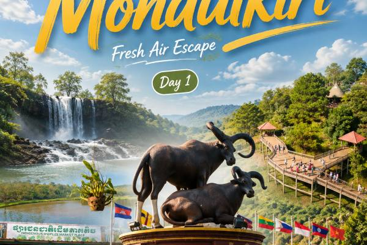

ខេត្តមណ្ឌលគិរី

មណ្ឌលគិរីល្បីល្បាញដោយសារភ្នំតូចធំ ព្រៃឈើ ទឹកធ្លាក់ប៊ូស្រា និងជម្រកសត្វដំរី។ វាជាទីតាំងដ៏ល្អសម្រាប់អ្នកចូលចិត្តធម្មជាតិ និងខ្យល់អាកាសត្រជាក់។
សកម្មភាពរីករាយ៖
- ទស្សនា និងលេងជាមួយសត្វដំរី
- លេងទឹកធ្លាក់ប៊ូស្រា
- ទស្សនាសមុទ្រឈើ និងភូមិជនជាតិដើមភាគតិច